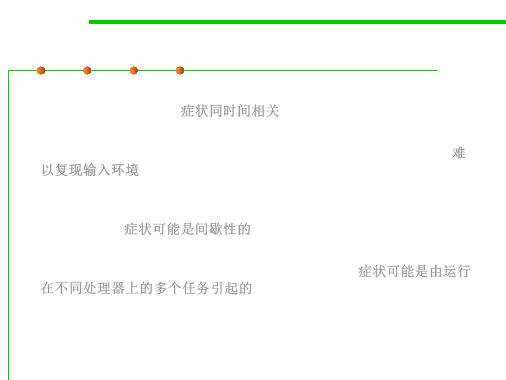

Why is debugging so difficult?
7.4 Debugging
▪ The symptom may be a result of timing problems, rather than
processing problems. 症状同时间相关
▪ It may be difficult to accurately reproduce input conditions (e.g., a
real-time application in which input ordering is indeterminate). 难
以复现输入环境
▪ The symptom may be intermittent. This is particularly common in
embedded systems that couple hardware and software
inextricably. 症状可能是间歇性的
▪ The symptom may be due to causes that are distributed across a
number of tasks running on different processors. 症状可能是由运行
在不同处理器上的多个任务引起的